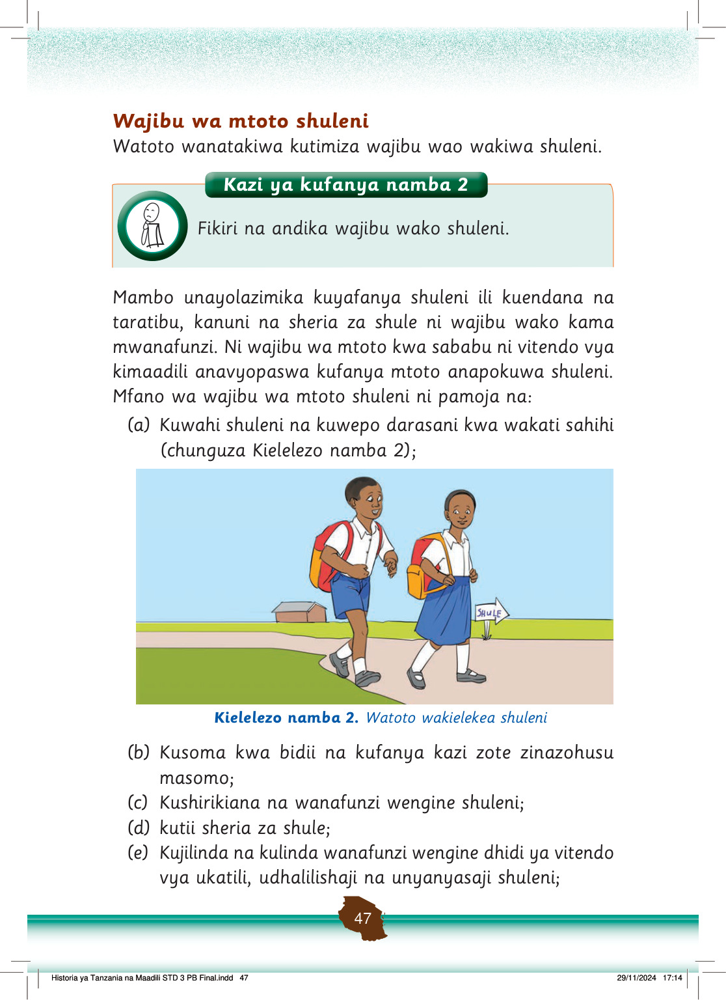

(f) Kuthamini mali za shule na kuepuka vitendo vya rushwa vinavyolenga kuharibu na kupoteza mali za shule;
(g) Kutoa taarifa zinazohusu uharibifu na upotevu wa mali za shule;
(h) Kuwapenda wanafunzi wenzake na watu wengine shuleni;
(i) Kuwasaidia walimu, watu waliokuzidi umri na wanafunzi wengine shuleni pale inapohitajika;
(j) Kuwatii walimu, viongozi na wafanyakazi wengine waliopo shuleni;
(k) Kuwaheshimu walimu, waliokuzidi umri na wanafunzi wengine; na
(l) Kufanya usafi wa mazingira ya shule na darasani (chunguza Kielelezo namba 3).
Wanafunzi wanafanya usafi katika mazingira ya shule. Wanafagia na kutupa taka kwenye pipa.
Kielelezo namba 3: Wanafunzi wakifanya usafi maeneo ya shule
Kuacha kutimiza wajibu wako shuleni ni kinyume na vitendo vya kimaadili.
Unapaswa kutambua kuwa kutimiza wajibu ni jambo la lazima uwapo shuleni.
Kazi ya kufanya namba 3
Andika mambo mengine ambayo ni wajibu wako shuleni.